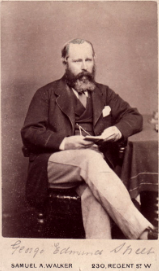
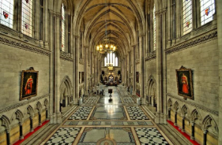
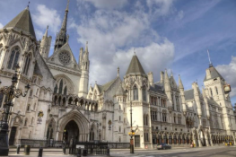
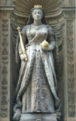
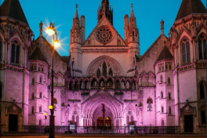
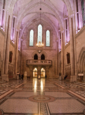
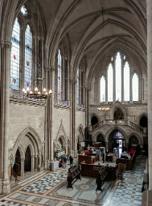

The Royal Courthouse for junior classes



The Royal Courthouse is an impressive complex of administrative buildings in the Neo-Gothic style. Located in the center of London, this monumental structure houses the Court of Appeal and the Supreme Courts of England and Wales. The Royal Courthouse is a national architectural landmark and one of the most striking examples of Victorian architecture.
The project's architect was former lawyer George Edmund Street.
Inside the Royal Courthouse complex, there are courtrooms and sculptures that represent justice.
The complex's courtyard features the Church of St. Mary, built in the 12th century by the Knights Templar.
The Royal Courthouse for senior classes

The Royal Courthouse of London is a monumental neo-Gothic complex of buildings on the Strand in central London.
The building was constructed between 1873 and 1882 by former lawyer George Edmund Street, and it is protected by the government as a prime example of Victorian architecture.
The building is occupied by the High Court of Justice and the Court of Appeal of England and Wales.
Design


The facade of the Royal Courts of Justice in London fully complies with the canons of neo-Gothic architecture – towers topped with high spires, stone garlands and carved window frames with a traditional clover pattern. The central portals of the Royal Courts of Justice are decorated with skillful carvings made on the facade, which is faced with Portland stone – a light-colored limestone. On the decorative spires placed on the two central towers, there are statues of Moses, Alfred the Great and Solomon.
Above the northern portal, which is used by judges to enter the building, there are sculptures of a cat and a dog, which are symbols of the eternal dispute between the defense and the prosecution. The facade of St. Mary's Church, which is located in the courtyard of the London Court, was renovated in 1880 and incorporated many elements of neo-Gothic architecture. One of the notable features of the church is its tall spire, which is adorned with a statue of Jesus Christ, as well as its large central rose window and symmetrical corner towers.
In one of the niches on the facade, there is a statue of Queen Victoria. She is the only monarch whose statue decorates the building of the Royal Court. The niche is decorated with stone garlands and bas-reliefs. These show achievements of Queen Victoria in art, science, and the military.
Halls
The Royal Courthouse has a labyrinth of 35 corridors with a total length of almost three miles. The corridors have doors to 1,000 rooms, including 88 courtrooms.
Some hall features


The courtroom has an old worn bench for over a hundred years;
One of the doors is equipped with a simple handle for almost 200 years.
At the end of the hall, there are special seats for spectators.